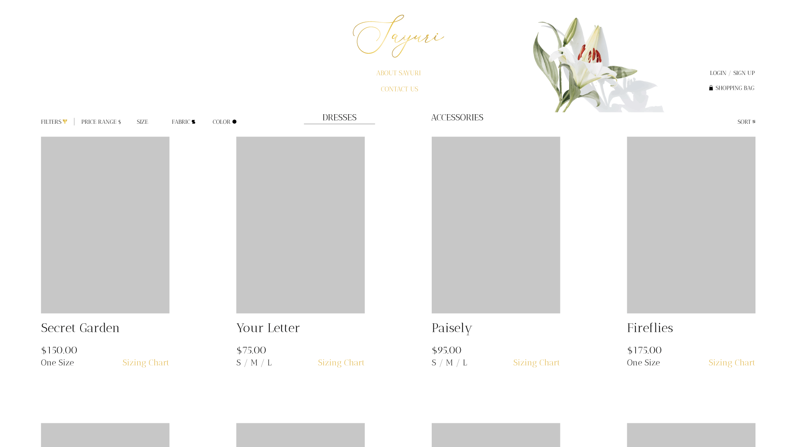
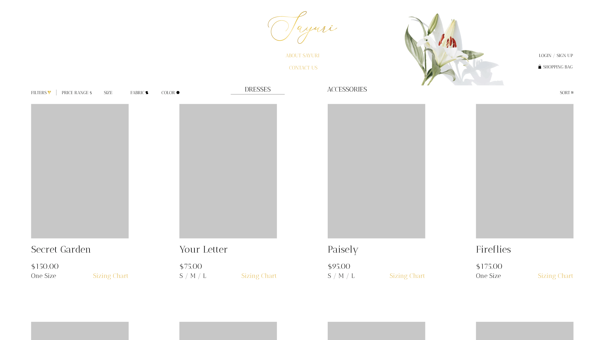

I created the following home page and shop page of an imaginary clothing brand called Sayuri, which is inspired by a short story I wrote when I was a university student. The themes that this website has is focused on a few key terms, which include "meadow," "whimsy," "elegant," and "modern." I wanted the home page to immediately catch a prospective shopper's eye and pull them into the type of atmosphere that the shop emits (ref. keywords).
 
